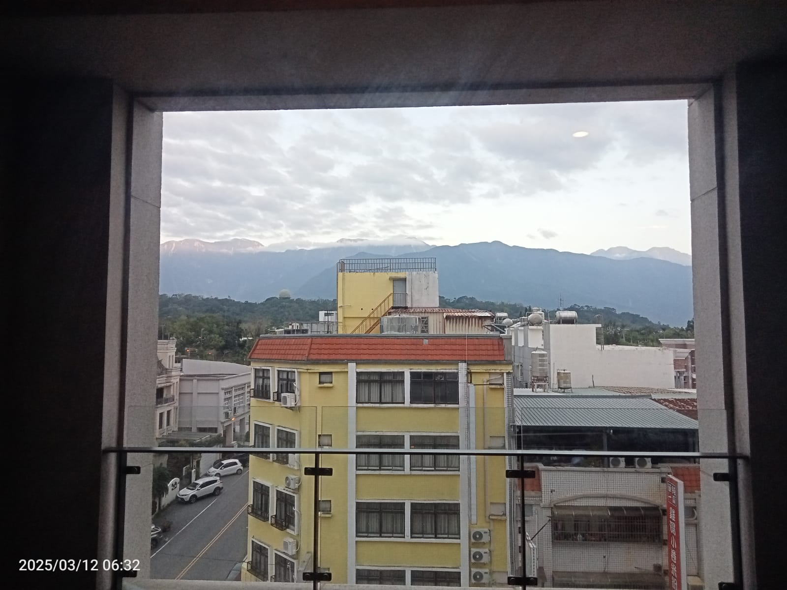

Data Objek:
Hualien, salah satu tiga kota yang sangat penting dalam Taiwan. Hualien adalah kota yang biasanya kena gempa bumi tersebut. Hualien ini adalah kota yang terkenal karena Taman Nasionalnya, saya tidak mempunyai informasi banyak tentang Taman Nasional tersebut karena saya tidak mempunyai kesempatan ke destinasi saat di Taiwan. Budaya di Taiwan pasti sangat berbeda daripada Indonesia, Taiwan tersebut lebih diam atau tidak terlalu ribut dalam tempat yang publik seperti tempat restoran tersebut. Mereka juga mempunyai budaya yang lebih diam dan indepeden setelah Chiang Kai Shek presiden pertama, membebaskan mereka dari Cina. Untuk bulan ini, Hualien mempunyai iklim yang normal dan tidak terlalu dingin, tetapi lebih dingin daripada Indonesia karena taiwan itu mempunyai derajat yang sekitar 27oC dalam masa iklim ini yang lebih dingin daripada Indonesia walaupun tidak masa dingin. Salah satunya yang paling menarik dalam Hualien adalah Tzu Chi Foundation building. Tzu Chi Foundation adalah sebuah gedung yang berfokus ke buddhism tetapi dalam gedung tersebut, mereka tidak berfokus untuk beribadah tetapi untuk mereka berfokus untuk membantu orang yang kena dari gempa bumi. Sebenarnya untuk mengikuti organisasi ini adalah bebas, organisasi Tzu Chi itu non-profitable jadi kegiatan dan aktivitas yang anda ingin melakukan dalam Tzu Foundation tersebut bebas dan ini bisa membantu anda dengan wawasan yang baru dalam komunikasi dan simplisitas dalam barang-barang yang berguna dalam hidup. Mereka juga tidak terlalu mempunyai mata uang yang tidak terlalu besar kalau ditukar untuk Indonesia. Hualien/Taiwan mempunyai uang tukar 1 NTD untuk 500 rp, lebih kecil kalau dibandingkan dengan yang lain. Sekarang kita akan ke Hotel Hualien, Apakah hotel ini aman menurut anda?
.jpeg)
TZU CHI FOUNDATION BUILDING VIEW DARI LUAR.
Hotel Lakeshore Hualien adalah hotel yang di Hualien juga dekat dengan pantai tersebut yang juga alasan untuk kata Lakeshore dalam namanya tersebut. Hotel Lakeshore Hualien mempunyai alamat No. 142, Zhong Mei road, Hualien City, Hualien County, Taiwan 970 jadi hotel ini dalam Hualien. Sarana tersebut mempunyai sebuah resto untuk makan paginya, mereka mempunyai ayam, sup, dll. Hotel ini tersebut mempunyai 5 lantai dengan 216 kamar, kamarnya mempunyai 2 tempat tidur, 1 closet, 1 tv, 1 meja, 1 hair dryer dalam kloset tersebut, dan 1 kamar mandi untuk kamar deluxe twins yaitu kamar yang kita tinggal di, ada kamar-kamar yang lain seperti, king’s deluxe room, king’s deluxe room mountain view, king’s deluxe room ocean view, family deluxe room, family deluxe room mountain view, dan terakhir family deluxe room ocean view.. Di sekitarnya, tidak terlalu ada tempat-tempat yang dekat, tetapi ada 7-Eleven dan family mart. Kamar tersebut tidak terlalu mempunyai varian tetapi mempunyai 7 lantai tersebut. Menurut anda, apakah hotel ini memang aman dari fakta yang disebut?
HOTEL LAKESHORE VIEW DARI RUANGAN YANG PALING MURAH
Hotel Lakeshore Hualien tidak berbohong dengan rating 4.3 tersebut, pelayanan, makanan, dan kamar tersebut sangat high quality dan hampir sempurna yang juga membuktikan mengapa hotel ini mempunyai bintang 4.3 sebagai rating tersebut, juga salah satu residen hotel lakeshore yang kita interview mempunyai opini yang bagus tentang hotel tersebut. Residennya bernama Rachel Zueng. Menurut dia, pelayan tersebut baik dan makanan tersebut lezat dan enak. Dia tidak tinggal di hotel karena dia mampir untuk makan malam tetapi hotelnya merasa luxury menurut dia. Saya juga mempunyai opini yang sama seperti dia tetapi keamanan hotel ini sangat bagus. Kalau dibandingkan dengan hotel yang lain yang saya pernah kunjungi, hotel ini adalah salah satu hotel yang mempunyai ruangan yang privat dan aman, tempat tidurnya juga enak dan membuat tidur mudah untuk kita. Ruangan juga besar dan mempunyai kamar mandi yang mempunyai toilet, shower head, dan bathtub. Bathtub tersebut enak dan mempunyai air panas yang juga mempunyai temperatur yang sempurna.
Hotel ini walaupun mempunyai banyak keunggulan, masih ada sedikit kekurangannya. Kamar tersebut tidak terlalu soundproof jadi kita bisa dengar suara dari luar. Walaupun keamanan sangat bagus, tetapi masih bisa ditingkat karena kita bisa kesusahan tidur karena suara yang dari luar.
Jadi Hotel Lakeshore Hualien adalah hotel yang dalam kondisi yang bagus untuk hotel yang mempunyai rating 4.3. Hotel tersebut mempunyai kamar yang aman tetapi juga mudah untuk tidur, makanannya juga enak dan lezat yang membantu anda memulai harinya, dan juga mempunyai pelayanan yang baik. Tetapi, saya mempunyai saran untuk membawa sebuah teman kalau mau ke hotel ini karena di ruangan sendiri bisa menjadi menakutkan.
Saya juga merekomendasikan mendapat mountain view/ocean view karena beliau bisa mendapat view dan foto-foto yang bagus kalau anda memilih hotel ini tersebut walaupun bisa mahal, saya cuma merekomendasikan karena saya rasa mountain dan ocean view tersebut mempunyai view yang bagus.